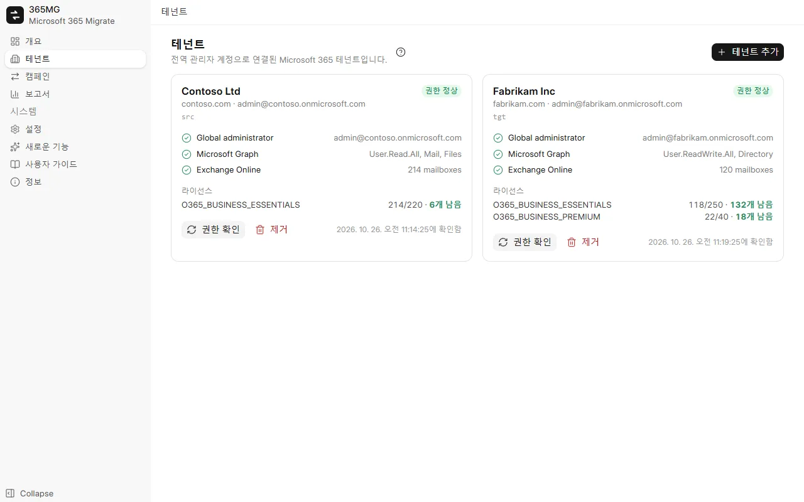
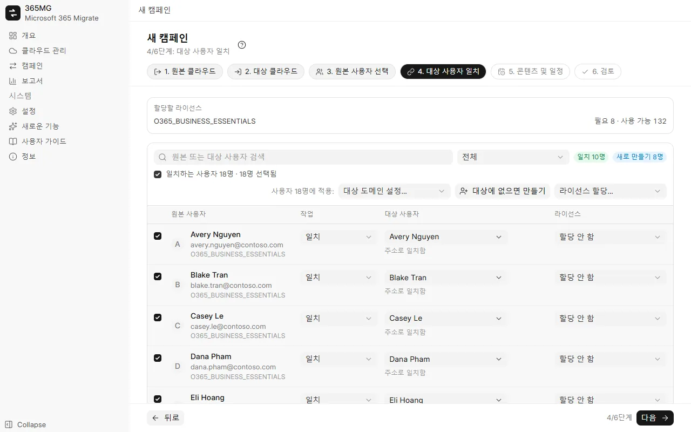

사용자 가이드
365MG 설치부터 마지막 보고서까지 안내합니다. 각 부분에 스크린샷이 있으며, 단계별 둘러보기는 움직이는 커서로 주요 작업을 재현합니다.
1. 설치
365MG는 Microsoft Edge WebView2가 있는 Windows 10 또는 11(64비트)에서 실행되며, WebView2는 Windows에 이미 포함되어 있습니다. 설치 프로그램은 작성자가 제공합니다. 아래 주소로 연락하세요.
365MG_x.y.z_x64-setup.exe를 실행하고 설치 프로그램의 안내를 따릅니다.- 시작 메뉴에서 365MG를 엽니다. 데이터는 이 PC의
%APPDATA%\com.tuanhd.365mg에 저장됩니다. - 설정에서 인터페이스 언어와 보조 드라이브의 임시 폴더를 선택합니다.
2. 시작하기 전에
- 원본 테넌트와 대상 테넌트 모두의 전역 관리자 계정.
- 만들거나 일치시킬 사용자에 충분한, 대상의 Exchange Online(및 OneDrive) 포함 라이선스.
- 복사하는 동안 켜 둘 수 있고 빠르고 안정적인 연결을 갖춘 PC(데이터가 이 PC를 거칩니다).
- 임시 폴더용 보조 드라이브. 4MB 이상의 OneDrive 파일만 이 폴더를 거칩니다.
3. 클라우드 추가
- 클라우드 관리를 열고 클라우드 추가를 클릭한 후 Microsoft 365를 선택합니다.
- 열리는 브라우저 창에서 전역 관리자로 로그인하고 권한을 수락합니다.
- 365MG로 돌아오면 클라우드가 Microsoft 365 태그와 상태 배지가 있는 카드로 표시됩니다. 카드를 클릭하면 도메인, 권한 확인 결과 및 라이선스를 볼 수 있습니다. 관리 센터에서 무언가를 변경한 후에는 권한 확인을 사용하세요.

4. Google Workspace
Google Workspace는 메일, 연락처, 일정, Google Drive, 공유 드라이브 및 그룹에 대해 원본과 대상 모두로 사용할 수 있습니다. 연결은 Workspace마다 한 번씩, 세 단계로 이루어집니다.
- OAuth 클라이언트(앱당 한 번): Google Cloud Console → API 및 서비스 → 사용자 인증 정보에서 유형이 데스크톱 앱인 OAuth 클라이언트 ID를 만들고, 그 클라이언트 ID와 보안 비밀번호를 365MG의 설정 → Google Workspace OAuth 클라이언트에 입력합니다. 설정에는 단계별 안내와 해당 페이지로 이동하는 단추가 있습니다.
- 로그인: 클라우드 관리에서 클라우드 추가 → Google Workspace를 클릭하고 최고 관리자로 로그인합니다.
- 데이터 이동기: 새 카드를 열고 데이터 이동기 설정을 클릭합니다. 365MG가 Google Cloud 프로젝트를 만들고, 필요한 API를 사용 설정하고, 키가 이 PC에 암호화되어 보관되는 서비스 계정을 만듭니다.
- 도메인 전체 위임: 표시된 클라이언트 ID와 범위 목록을 복사하고, 관리 콘솔 → 보안 → 액세스 및 데이터 관리 → API 제어 → 도메인 전체 위임을 열어 새로 추가를 클릭한 후 둘 다 붙여 넣고 승인합니다. 365MG로 돌아와 추가했습니다 — 확인을 클릭합니다.
| 콘텐츠 | Microsoft → Google | Google → Microsoft |
|---|---|---|
| 메일 | 각 폴더가 라벨이 되며, 읽음 상태와 플래그가 유지됩니다 | 각 메시지는 하나의 폴더(첫 번째 라벨 또는 받은 편지함/보낸 편지함/보관)로 이동하며, 나머지 라벨은 범주가 됩니다 |
| 연락처 | 연락처 폴더가 연락처 그룹이 됩니다 | 연락처 그룹이 연락처 폴더가 됩니다 |
| 일정 | 이벤트를 참석자와 함께 가져오며, 초대는 보내지 않습니다 | 이벤트를 참석자 없이 만들며(Microsoft가 초대를 보내기 때문), 참석자 목록은 이벤트 본문에 보관됩니다 |
| 드라이브 | OneDrive 파일을 그대로 내 드라이브로 | Docs, Sheets, Slides는 Word, Excel, PowerPoint로 내보내며, Forms와 Sites는 건너뜁니다 |
| 공유 드라이브 | SharePoint/Teams 라이브러리 → 구성원이 포함된 공유 드라이브 | 공유 드라이브 → 구성원이 포함된 비공개 Microsoft 365 그룹(팀 사이트) |
| 그룹 | Microsoft 365 그룹 및 목록 → 설정이 일치하는 Google 그룹 | Google 그룹 → Microsoft 365 그룹 |
공유 드라이브: 캠페인 옵션에서 공유 드라이브 / SharePoint 라이브러리를 선택한 후, 캠페인의 공유 드라이브 탭에서 원본 드라이브를 선택하고 대상에 만들기를 클릭합니다. 365MG가 대상 공유 드라이브 또는 Microsoft 365 그룹을 만들고 일치시킬 수 있는 구성원을 추가합니다.
5. 캠페인 만들기
캠페인은 사용자 묶음을 원본 테넌트 하나에서 대상 테넌트 하나로 옮깁니다. 마법사는 6단계이며, 제목·단계·필터는 항상 위에, 뒤로 / 다음 / 캠페인 저장 버튼은 항상 아래에 표시됩니다.
- 원본 테넌트와 대상 테넌트: 각각 한 단계입니다.
- 원본 사용자 선택: 라이선스, 도메인 또는 상태로 필터링하고 목록에서 사용자를 선택해 선택 목록에 추가합니다.
- 대상 사용자 일치: 365MG가 주소, 별칭 또는 표시 이름으로 대상 사용자를 제안합니다. 행을 선택한 다음 대상 도메인 설정…, 대상에 없으면 만들기 또는 라이선스 할당…를 일괄 적용합니다. 목록 위의 확인란은 필터에 표시된 모든 행을 선택합니다.
- 콘텐츠 및 일정: 메일, OneDrive, 연락처, 일정, 정크 메일 건너뛰기, 한 번 또는 N시간마다 실행, 스레드 수.
- 검토: 요약과 필요한 라이선스를 확인한 다음 캠페인 저장를 클릭합니다.

6. 대상 사용자 준비
캠페인 페이지에서 사용자 만들기 및 라이선스 할당을 클릭하면 "만들기"로 표시된 대상 사용자가 만들어지고 모든 사용자에게 선택한 라이선스가 할당됩니다. 실패한 행에는 이유가 표시되므로, 문제를 해결하고 다시 실행하세요.
새 사용자는 처음 로그인할 때 변경해야 하는 임의의 초기 암호를 받습니다. ⋯ 메뉴에서 CSV로 내보내 전달한 후 파일을 삭제하세요.
7. 웨이브와 모의 실행
사용자 탭에서 사용자를 선택하고 웨이브로 이동을 사용하여 대규모 마이그레이션을 나눕니다. 그러면 실행 표시줄에서 웨이브를 하나씩 시작할 수 있으며, 예약된 실행은 이미 시작한 모든 웨이브를 계속 동기화합니다.
모의 실행(개수만 계산)은 양쪽을 읽고 실제 실행 시 복사할 항목, 파일 및 메가바이트 수를 보고합니다. 대상에는 아무것도 쓰지 않으며, 모든 대상 사서함과 OneDrive가 있는지도 확인합니다.
8. 실행, 일시 중지, 재개
모든 캠페인 탭 위쪽의 실행 표시줄에는 캠페인이 현재 하는 작업과 다음 작업이 표시됩니다.
| 상태 | 표시 내용 | 단추 |
|---|---|---|
| 아직 실행 안 함 | 일정 | 지금 시작, 모의 실행 |
| 복사 중 | 경과 시간, 실행 중 및 대기 중인 스레드 | 일시 중지 |
| 일시 중지됨 | 마지막 실행 | 재개(나머지 복사) |
| 동기화됨 | 완료 시각과 다음 예약 실행 | 다시 실행(새 데이터 가져오기), 일정 일시 중지 |
일시 중지하면 스레드가 중지되고 일정이 보류됩니다. 복사한 모든 데이터는 기록에 남으므로 재개해도 두 번 복사하지 않습니다. 복사 진행률 탭에는 각 사서함과 OneDrive가 속도와 함께 표시되며, 진행이 멈춘 스레드는 자동으로 다시 시작됩니다.
9. 결정 필요
실행 중 자체적으로 해결하면 안 되는 상황이 발생하면, 캠페인에 종류별로 그룹화된 결정 필요 패널이 표시되며 각 사용자에 대한 설명과 작업이 제공됩니다.
| 종류 | 해야 할 일 |
|---|---|
| 대상 사서함이 활성 상태가 아님 | 사용자에게 라이선스를 할당(또는 공유 사서함으로 변환)하고 15~60분 기다린 후 다시 확인하세요. 의도적으로 라이선스를 제거한 경우 이 사용자 건너뛰기를 선택하세요. |
| 대상에 아직 OneDrive가 없음 | OneDrive 생성 명령 복사를 클릭하여 SharePoint 관리자로 Windows PowerShell에서 실행하거나, 사용자가 한 번 로그인하게 한 후 다시 확인하세요. |
| 대상 사용자가 다시 만들어짐 | 새 사서함 또는 OneDrive로 처음부터 다시 복사하거나 건너뛰세요. |
| 결과를 알 수 없는 항목 | 다시 보내기(이미 있는 항목은 2개가 됨) 또는 이 항목 건너뛰기. |
| 대상의 항목 수가 복사한 수보다 적음 | 대부분 대상에서 의도적으로 삭제한 경우입니다. 확인으로 인지했음을 표시하세요. |

10. 메일 그룹
메일 그룹 탭에서 원본 그룹을 선택하고 그룹 만들기 및 구성원 추가를 클릭합니다. Graph는 Microsoft 365 그룹만 만들 수 있으므로, 배포 목록과 메일 사용 보안 그룹은 같은 별칭의 Microsoft 365 그룹이 되며, 구성원의 받은 편지함으로 배달하고 외부 보낸 사람의 메일을 받습니다. 대상 사용자가 없는 구성원은 그룹별로 나열됩니다.
11. 보고서
보고서에는 캠페인별로 사용자별 및 전체의 원본 수와 복사 수, 확인이 필요한 사용자, 그룹 및 메모가 표시됩니다. HTML 내보내기는 단일 페이지(밝은 테마와 어두운 테마, 검색 및 필터)를 만들어 열고, CSV 내보내기는 사용자 또는 그룹 목록을 만듭니다.
12. 설정 및 언어
- 언어: 9개 언어, 즉시 적용됩니다. 아랍어를 선택하면 레이아웃이 오른쪽에서 왼쪽으로 바뀝니다.
- 임시 폴더(스풀): C 드라이브가 아닌 곳에 두세요.
- 스레드를 멈춤으로 간주할 시간: 스레드를 다시 시작하기 전까지 진행이 없는 시간(분)입니다(최대 2회).
13. 업데이트
새로운 기능에는 모든 버전의 변경 내용이 나열됩니다. 새 버전이 게시되면 사이드바에 표시되며, x.y.z(으)로 업데이트를 클릭하면 다운로드하고 작성자의 서명을 확인한 후 앱을 닫고 설치한 다음 다시 엽니다. 실행 중인 캠페인을 먼저 일시 중지하고, 업데이트 후 재개하세요.
14. 문제 해결
| 증상 | 원인 및 해결 방법 |
|---|---|
| "데이터 이동 앱의 권한이 적용되기를 기다리는 중" | 새 앱이 Exchange와 SharePoint에서 승인되기까지 몇 분이 걸립니다. 실행은 최대 30분까지 자동으로 기다립니다. |
| 속도가 떨어지고 "제한" 메시지가 많음 | Exchange 또는 SharePoint는 사서함별 및 앱별로 제한합니다. 스레드를 늘려도 사서함 하나에는 도움이 되지 않으며, 많은 사서함이 대기 중일 때 도움이 됩니다. |
| 대상 개수가 원본보다 적음 | 보고서 메모를 확인하세요. 정크 메일 건너뛰기, 결정에 따라 제외된 항목 또는 대상에서 삭제된 메일일 수 있습니다. |
| 대상 사서함에 이미 메일이 있음 | 365MG는 첫 실행에서 이 사서함으로의 복사를 거부합니다. 다른 도구로 복사한 적이 없는 경우에만 캠페인에서 허용하세요. |